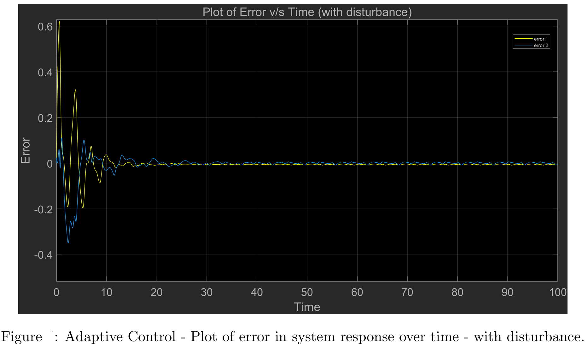
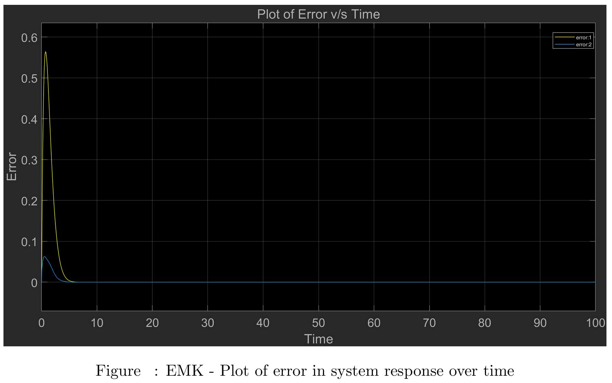
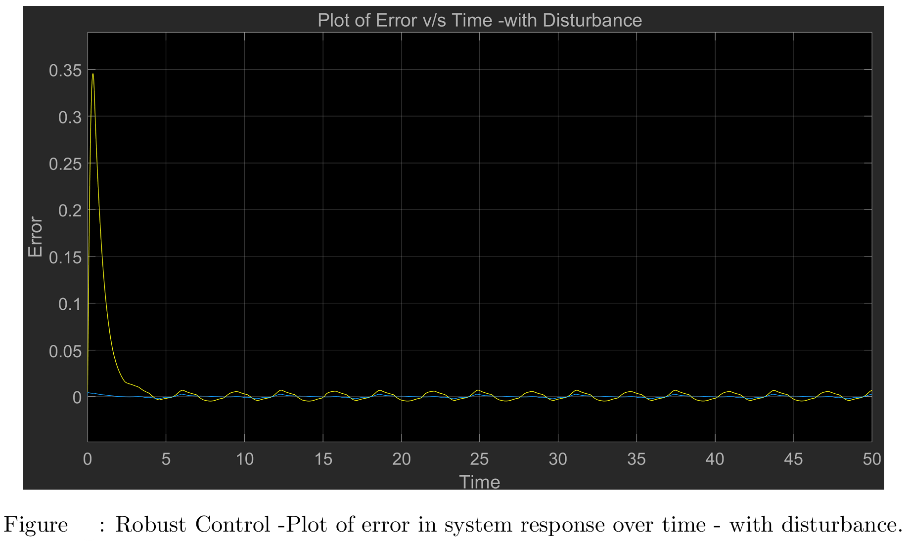

Back to Home
Tracking Control of a Robot Manipulator with Uncertainties
This project focuses on understanding the differences between various nonlinear control design techniques.
The primary objective is to design, simulate, and compare the performance of three distinct nonlinear
controllers for a tracking task:
- Exact Model Knowledge (EMK)
- Adaptive Control
- Robust Control
Designed and simulated Sliding Mode Control to achieve superior disturbance rejection with near-perfect tracking, and
Adaptive Control to reduce steady-state error by 50% compared to Exact Model Knowledge.
Evaluated computational efficiency and stability, finding that Adaptive Control balanced efficiency and performance,
with 20% faster computational time.
Software Used:
MATLAB, Simulink
Concepts Learned:
Stability Analysis, Non-Linear Controller Design


